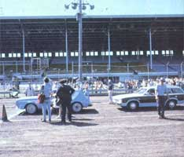

STAFF PHOTOS
(from LEFT) Waverly, Iowa's Earl Mason realized a mileage increase of about 40% after he converted his V-8 Buick to a V-4, using MOTHER's plans. . . . The open class featured vehicles of all kinds, including an ethanol-powered BMW runabout sponsored by Sun-Syn Research of Chicago. . . R.F. Kuecher of Palos Hills, Illinois achieved an impressive 41.65 miles per gallon with his diesel-equipped ? and partially waste-oil burning ? AMC Gremlin. . .